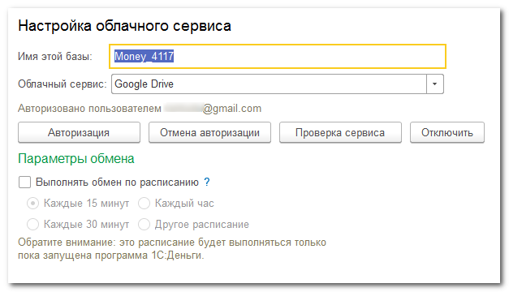

Для обмена с мобильными приложениями можно использовать облачные сервисы хранения файлов:
Чтобы синхронизировать приложения через один из перечисленных сервисов пользователь должен иметь на нем действующий аккаунт и достаточно свободного места.
Начинать настройку следует с настольной программы:

После авторизации настольная программа создаст в облачном каталоге вспомогательный файл, который будет использоваться для проверки соединения. Без этого файла мобильные приложения не смогут получать из облака файлы с данными и отправлять в облако ответные файлы.
Аналогичную настройку нужно выполнить и в мобильном приложении:
При успешной авторизации мобильное приложение найдет в облаке вспомогательный файл, проверит возможность обмениваться данными с настольной базой, и, если все в порядке, добавит в этот файл свои параметры. После этого мобильное приложение будет готово к обмену с настольной программой.
Обратите внимание: если мобильное приложение уже синхронизировано с другой информационной базой, обмениваться данными с новой базой оно не сможет.
Чтобы «отвязать» мобильное приложение от прежней базы и синхронизировать с новой, нужно в мобильном приложении отключить синхронизацию и включить ее снова.
Приложения используют каталог облачного сервиса для обмена файлами. При этом инициатором синхронизации должно выступать мобильное приложение.
Обратите внимание: при обмене могут передаваться значительные объемы данных и в случае мобильного интернета это может привести к дополнительным платежам.
Если учет ведется на нескольких мобильных устройствах, желательно сначала выполнить синхронизацию на всех них. После этого запустить синхронизацию в настольной программе, а потом уже можно будет снова синхронизировать мобильные приложения.
Иногда в облаке могут оказаться устаревшие файлы обмена. Например, мобильное приложение прочитало файл от настольной программы, но не смогло удалить его из облака, или настольная программа выгрузила файл в облако до выполнения синхронизации в домашней сети. В любом случае, перед чтением файла мобильное приложение проверяет номер сообщения, и, если он меньше или равен номеру уже принятого сообщения, такой файл загружен не будет, а пользователю будет показано сообщение об ошибке.
В этом случае следуе еще раз выполнить синхронизацию сначала в мобильном приложении, затем в настольной программе, и опять в мобильном приложении.
Сообщение об неправильном номере полученного сообщения так же могут возникать, например, при восстановлении приложения из резервной копии или при некорректном завершении предыдущей синхронизации. Для исправления этой ситуации откройте в настольной программе форму Синхронизация с мобильными устройствами, откройте карточку устройства, в обмене с которым возникают ошибки, и исправьте Номер принятого сообщения на 0, а Номер отправленного сообщения на больший чем тот, что был указан в сообщении об ошибке. После этого повторите синхронизацию начиная с мобильного приложения.
Сохранность данных не зависит от сохранности файлов обмена в облаке. Программы отправляют друг другу все последние изменения до тех пор, пока не получат от корреспондента подтверждение о получении. Так что удаление файлов обмена из облака только затормозит синхронизацию но никак не повлияет на сохранность данных.
Если по каким-либо причинам из облака будет удален вспомогательный файл со списком устройств, необходимо еще раз проверить настройку синхронизации сначала в настольной программе, затем – во всех мобильных приложениях.
Обратите внимание: настройку облачного сервиса нужно делать сначала в настольной программе, а затем в мобильных приложениях. А обмен данными – наоборот, сначала в мобильных приложениях, затем в настольной программе.